library(ggplot2)
library(questionr) # insee data
library(dplyr)
#>
#> Attaching package: 'dplyr'
#> The following objects are masked from 'package:stats':
#>
#> filter, lag
#> The following objects are masked from 'package:base':
#>
#> intersect, setdiff, setequal, union
library(RColorBrewer)
library(readr)
library(viridis)
#> Error in `library()`:
#> ! there is no package called 'viridis'
library(tidyr)14 Introduction
ggplot2 is an extension of the tidyverse that enables the generation of charts with a consistent and powerful syntax. It requires learning an additional ‘mini-language’ but allows for the efficient construction of complex graphs.
Library
Here, we simply load the various packages that will allow us to manipulate data tables and create figures:
tidyverseis a package that contains several packages designed for data manipulation in R (stringr, dplyr, ggplot2)ggplot2which allows you to create complex graphics and observing data with visuals
In ggplot2, a geom (short for “geometric object”) is a layer that defines how data points are visually represented in a plot. Each type of plot, such as points, lines, bars, etc., is created using a specific geom function. Here are some common examples:
geom_point(): for scatter plots.geom_bar(): for bar charts.geom_histogram(): for histograms.geom_boxplot(): for box plots.
These functions are added to a basic ggplot object using the + operator.
Example of code :
ggplot() +
geom_…………(data, aes(x = x, y = y, fill = color)) +
labs(title = “title”, x = “abs”, y = “ord”) +
theme_bw()
14.1 Data
We will present different code examples with one dataset, but the codes are applicable to all datasets. Therefore, it is important to save our codes properly so that we can copy them for other data. Here is the dataset :
The file ‘rp2018’ contains, for all the municipalities in France in 2018, the following variables will be use.
pop_tot (population)
etud (student)
cadres (senior executive)
Unemployment
data(rp2018)
head(rp2018)
#> # A tibble: 6 × 62
#> code_insee commune code_region region code_departement departement pop_tot
#> <chr> <chr> <chr> <chr> <chr> <chr> <dbl>
#> 1 01004 Ambérieu-e… 84 Auver… 01 Ain 14204
#> 2 01007 Ambronay 84 Auver… 01 Ain 2763
#> 3 01014 Arbent 84 Auver… 01 Ain 3356
#> 4 01024 Attignat 84 Auver… 01 Ain 3196
#> 5 01025 Bâgé-Domma… 84 Auver… 01 Ain 4078.
#> 6 01027 Balan 84 Auver… 01 Ain 2513
#> # ℹ 55 more variables: pop_cl <fct>, pop_0_14 <dbl>, pop_15_29 <dbl>,
#> # pop_18_24 <dbl>, pop_75p <dbl>, pop_femmes <dbl>, pop_act_15p <dbl>,
#> # pop_chom <dbl>, pop_agric <dbl>, pop_indep <dbl>, pop_cadres <dbl>,
#> # pop_interm <dbl>, pop_empl <dbl>, pop_ouvr <dbl>, pop_scol_18_24 <dbl>,
#> # pop_non_scol_15p <dbl>, pop_dipl_aucun <dbl>, pop_dipl_bepc <dbl>,
#> # pop_dipl_capbep <dbl>, pop_dipl_bac <dbl>, pop_dipl_sup2 <dbl>,
#> # pop_dipl_sup34 <dbl>, pop_dipl_sup <dbl>, log_rp <dbl>, …14.2 Basic plot - ggplot
Here, we indicate to R that we want to plot a scatterplot, so we need to specify a “x” and “y” for our graph. Here the example of the basic R plot, and the ggplot plot.
plot(rp2018$etud, rp2018$cadres) # plot(x, y)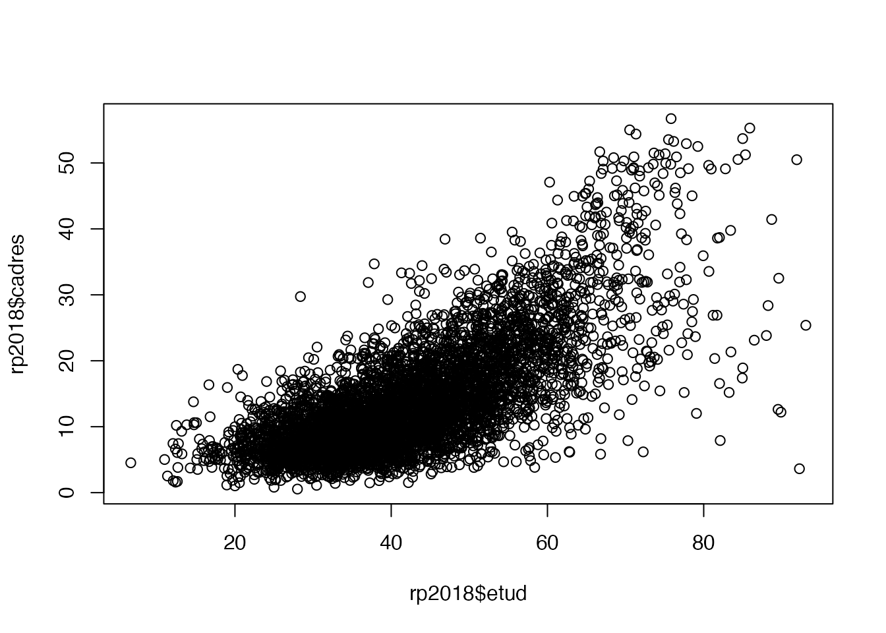
ggplot() +
geom_point(data = rp2018, aes(x = etud, y = cadres))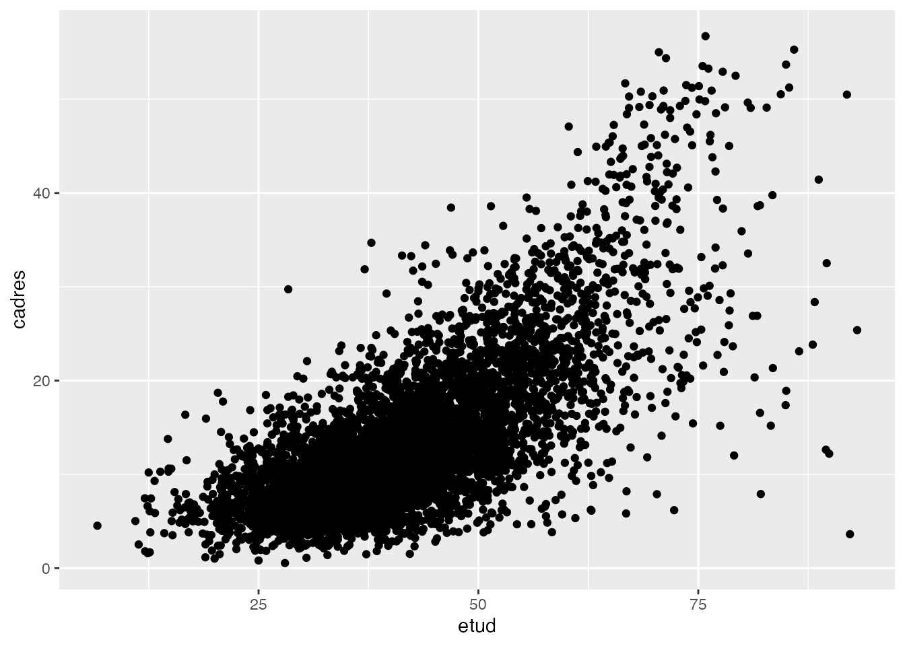
14.3 Histogram
Usually, when you’re interested in a variable, you look at its distribution. First, a classic basic histogram: you specify the data table in the ggplot() function, and the variable of the table that will be used to create the plot in the aes() function. For example, we need to specify which column of the table will be represented on the x-axis, on the y-axis, or which column will allow us to color certain elements or modify the shape of the points, for instance. We then add successive layers to the graph using the + sign to achieve the desired rendering.
Here, we indicate to R that we want to plot a histogram, so we don’t need to specify a “y” for our graph:
ggplot(rp2018, aes(x = etud)) +
geom_histogram()
#> `stat_bin()` using `bins = 30`. Pick better value `binwidth`.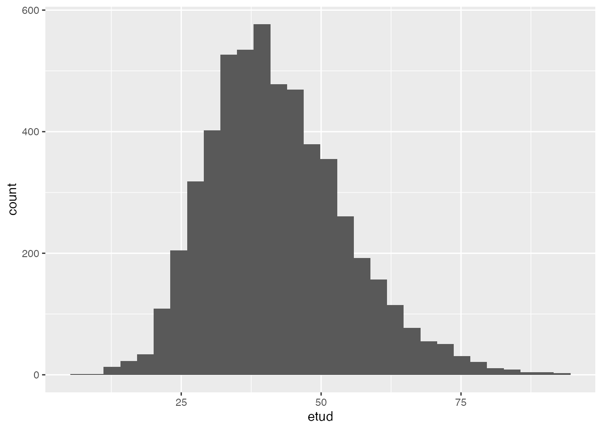
The problem is that the figure is quite unattractive, isn’t it? So, we will modify it with options: fill for the bar fill, color for the border, and alpha for transparency. The theme allows us to change the overall appearance of the figure. Here you can see all theme : https://ggplot2.tidyverse.org/reference/ggtheme.html
Below, geom_histogram() is used to plot a histogram.
We can also modify the number of classes represented by the histogram with the
binsoption.To modify the size of the classes represented by the histogram, we use the
binwidthoption.
Try both codes below:
ggplot(rp2018, aes(x = etud)) +
geom_histogram(fill = "red",
color = "black",
binwidth = 5, # reduce or increase the width of the bar (number of classes)
alpha = 0.5) +
labs(title = "Student proportion in France per municipalities",
x = "Student (%)",
y = "Count") +
theme_bw() 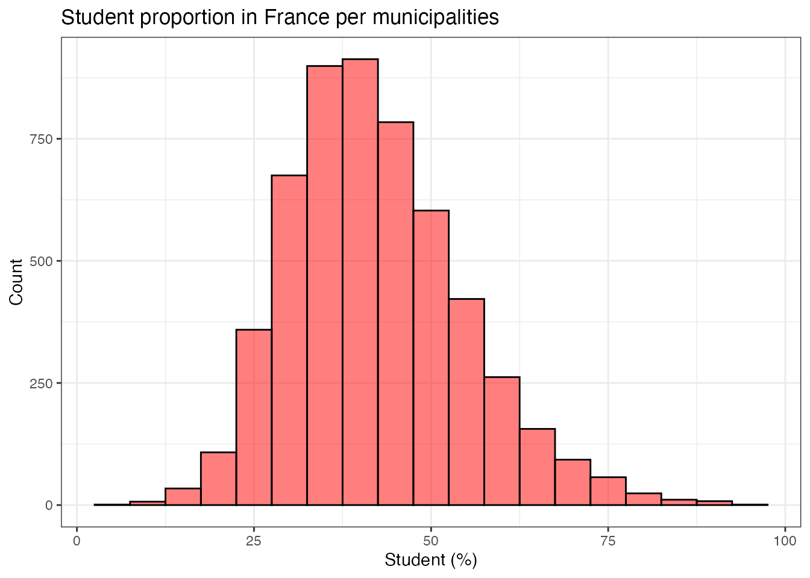
14.4 Density
geom_density() is used to plot the density curve.
ggplot(rp2018, aes(x = etud)) +
geom_density(fill = "red",
color = "black",
alpha = 0.5) +
labs(title = "Student proportion in France per municipalities",
x = "Student (%)",
y = "Count") +
theme_bw() 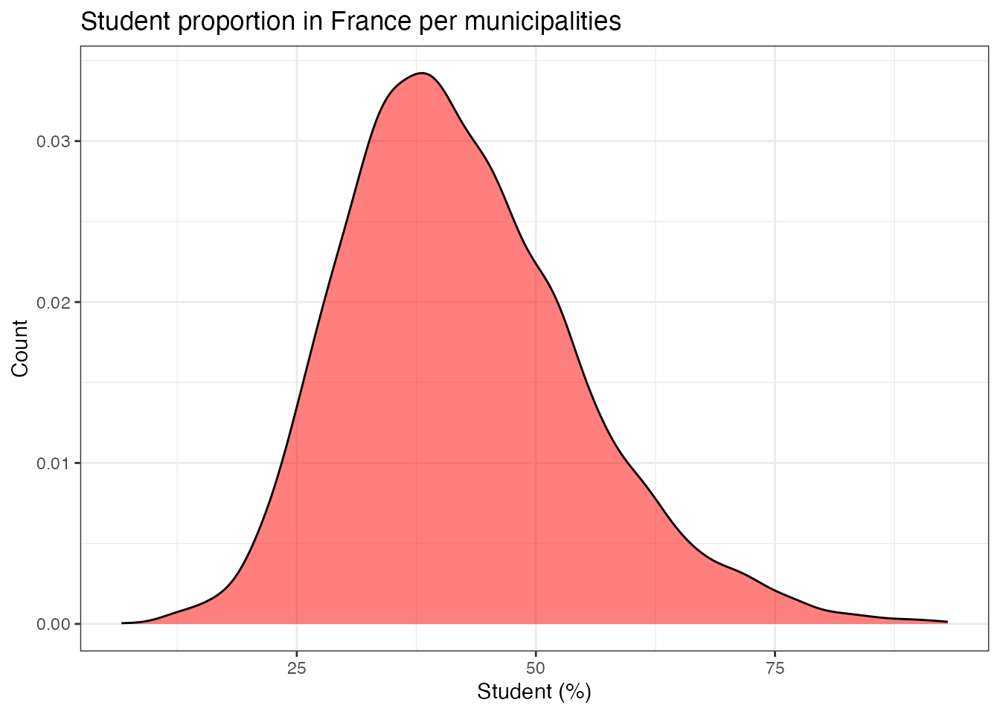
14.5 QQplot
A QQ plot (quantile-quantile plot) indicates a normal distribution when the points closely follow a straight line, suggesting that the quantiles of the data match the quantiles of a normal distribution. A normal Q-Q plot is a common application where one set of data is plotted against a theoretical normal distribution. If the points form a straight line, the data can be considered to be normally distributed. Here is a good QQ-plot reference : https://www.tjmahr.com/quantile-quantile-plots-from-scratch/
ggplot(rp2018, aes(sample = etud)) +
geom_qq(color = "red") +
labs(x = "Student (%)") +
theme_bw()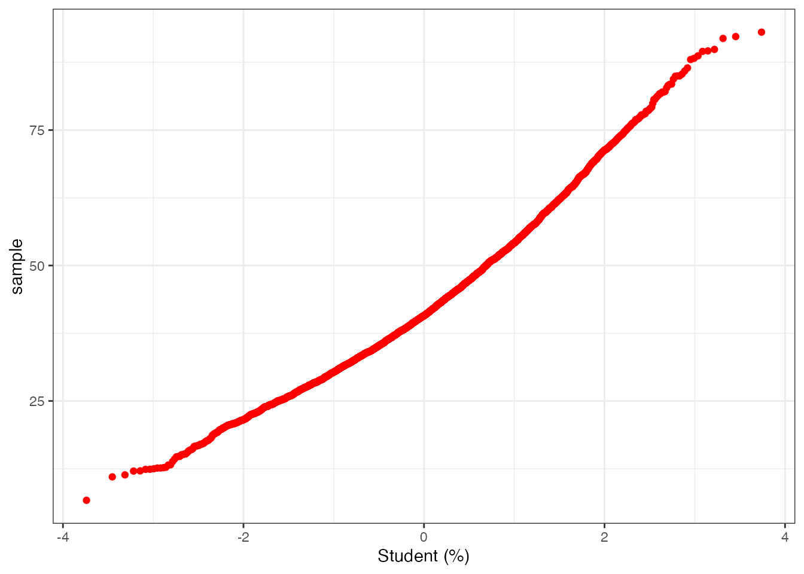
14.6 Boxplot
Let’s look at the proportion of cadre in the form of boxplots for each variety. To do this, we use the geom_boxplot() function. Please note that the color of boxplots and barplots is managed not with color but with fill (points and lines are managed with ‘color’). Other palettes are available at the following address: https://bookdown.org/rdpeng/exdata/plotting-and-color-in-r.html
display.brewer.all()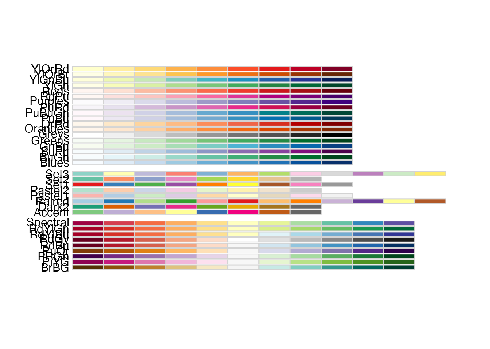
ggplot(data = rp2018, aes(y = etud)) +
geom_boxplot() +
labs(y = "Student(%)") +
theme_bw() 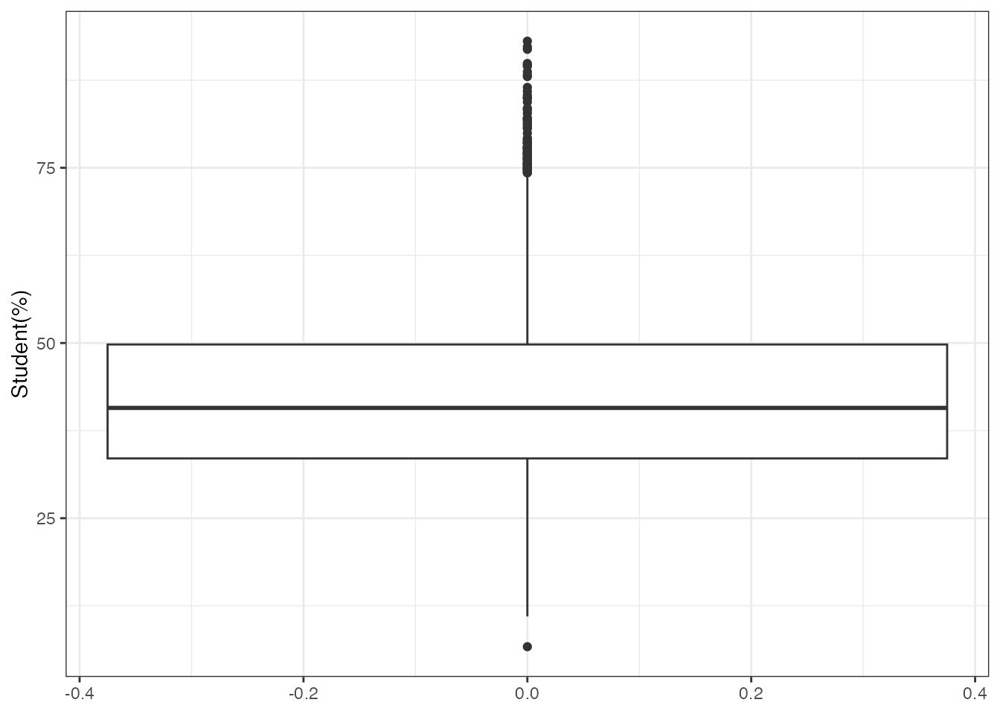
ggplot(data = rp2018, aes(x = code_region, y = etud, fill = region)) +
geom_boxplot() +
labs(title = "Proportion of student per region", x = "Region", y = "Student(%)", fill = "Region") +
scale_fill_brewer(palette = "Set1") + # color
theme_bw()
#> Warning in RColorBrewer::brewer.pal(n, pal): n too large, allowed maximum for palette Set1 is 9
#> Returning the palette you asked for with that many colors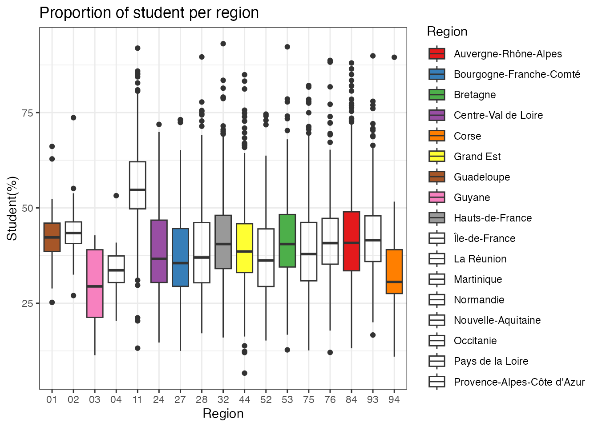
The colorRampPalette() is a the function that returns you a fixed number of colors that interpolate the palette. Again we have a function pal() that was returned by colorRampPalette(), this time interpolating a palette containing colors. But now, the pal() function takes an integer argument specifing the number of interpolated colors to return.
The reference for the packages legocolors : https://cran.r-project.org/web/packages/legocolors/readme/README.html
pal1 <- colorRampPalette(c("lightblue", "purple", "red", "green"))
pal2 <- colorRampPalette(brewer.pal(9, "Set1")) # 9 to use all the color
library(legocolors)
#> Error in `library()`:
#> ! there is no package called 'legocolors'
pal3 <- colorRampPalette(legoCols$hex[2:13])
#> Error:
#> ! object 'legoCols' not found
# length(rp2018$code_region)
# length(unique(rp2018$code_region))
ggplot(data = rp2018, aes(x = code_region, y = etud, fill = region)) +
geom_boxplot() +
labs(title = "Proportion of student per region", x = "Region", y = "Student(%)", fill = "Region") +
scale_fill_manual(values = pal3(17)) + # you can change the pal() here (see above)
theme_bw()
#> Error in `pal3()`:
#> ! could not find function "pal3"
#theme(legend.position = "none",
#axis.text.x = element_text(angle = 90, vjust = 0.5, hjust = 1))14.7 Multi-boxplot
We could also put the region in x, and color according to the variable. It allows to make a graphics with 3 dimensions.
For the ‘rp2018’ data, we can create categories based on regions or departments; however, this still results in a large number. In the example below, I still made the boxplot graph but removed the legend. In this case, it is still better to do a multiple plots with a grid format.
ggplot(rp2018, aes(x = region, y = etud, fill = code_departement)) +
geom_boxplot(outlier.shape = NA) +
scale_fill_manual(values = pal2(100)) +
labs(title = "Department in the region", x = "Region", y = "Student(%)") +
theme_bw() +
theme(legend.position = "none",
axis.text.x = element_text(angle = 90, vjust = 0.5, hjust = 1))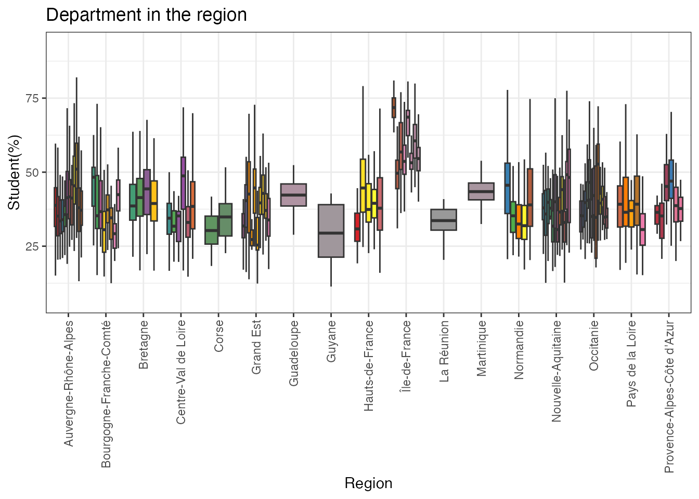
# 44 Grand-Est, 76 Occitanie, 53 Bretagne, 28 Normandie
rp2018_reg44 <- rp2018[rp2018$code_region == "44",]
g44 <- ggplot(rp2018_reg44, aes(x = code_departement, y = etud, fill = code_departement)) +
geom_boxplot() +
scale_fill_brewer(palette = "Set3") +
labs(title = "Grand Est", x = "Department", y = "Student(%)") +
theme_bw() +
theme(legend.position = "none")
rp2018_reg76 <- rp2018[rp2018$code_region == "76",]
g76 <- ggplot(rp2018_reg76, aes(x = code_departement, y = etud, fill = code_departement)) +
geom_boxplot() +
scale_fill_brewer(palette = "Set3") +
labs(title = "Occitanie", x = "Department", y = "Student(%)") +
theme_bw() +
theme(legend.position = "none")
rp2018_reg53 <- rp2018[rp2018$code_region == "53",]
g53 <- ggplot(rp2018_reg53, aes(x = code_departement, y = etud, fill = code_departement)) +
geom_boxplot() +
scale_fill_brewer(palette = "Set3") +
labs(title = "Bretagne", x = "Department", y = "Student(%)") +
theme_bw() +
theme(legend.position = "none")
rp2018_reg28 <- rp2018[rp2018$code_region == "28",]
g28 <- ggplot(rp2018_reg28, aes(x = code_departement, y = etud, fill = code_departement)) +
geom_boxplot() +
scale_fill_brewer(palette = "Set3") +
labs(title = "Normandie", x = "Department", y = "Student(%)") +
theme_bw() +
theme(legend.position = "none")
library(gridExtra)
#>
#> Attaching package: 'gridExtra'
#> The following object is masked from 'package:dplyr':
#>
#> combine
grid.arrange(g44, g76, g53, g28,
nrow = 2, ncol = 2)
#> Warning in RColorBrewer::brewer.pal(n, pal): n too large, allowed maximum for palette Set3 is 12
#> Returning the palette you asked for with that many colors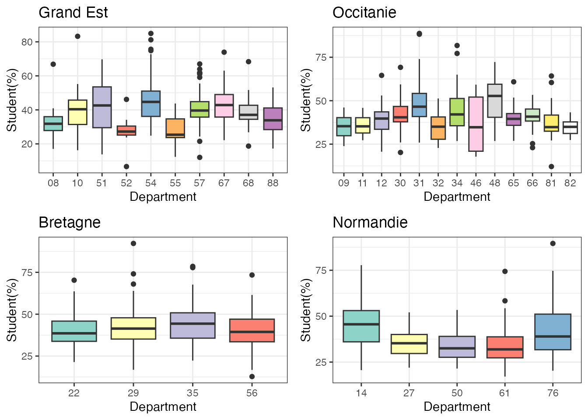
14.8 Boxplot with point
To display points on a boxplot, you can use the geom_jitter() function, which displays the points by offsetting them from each other to avoid overlap. When displaying the points, you should add the 'outlier.shape = NA' option in the geom_boxplot()function to prevent displaying the same points twice.
rp2018_reg44 <- rp2018[rp2018$code_region == "44",]
ggplot(rp2018_reg44, aes(x = departement, y = etud, fill = departement)) +
geom_boxplot(outlier.shape = NA) + #exclude point outlier
geom_jitter(width = 0.1, color = "black") + # jitter allows to arrange the place of the point comparaing to the geom_point
scale_fill_brewer(palette = "Set3") +
labs(title = "Grand Est", x = "Department", y = "Student(%)") +
theme_bw() +
theme(legend.position = "none",
axis.text.x = element_text(angle = 90, vjust = 0.5, hjust = 1))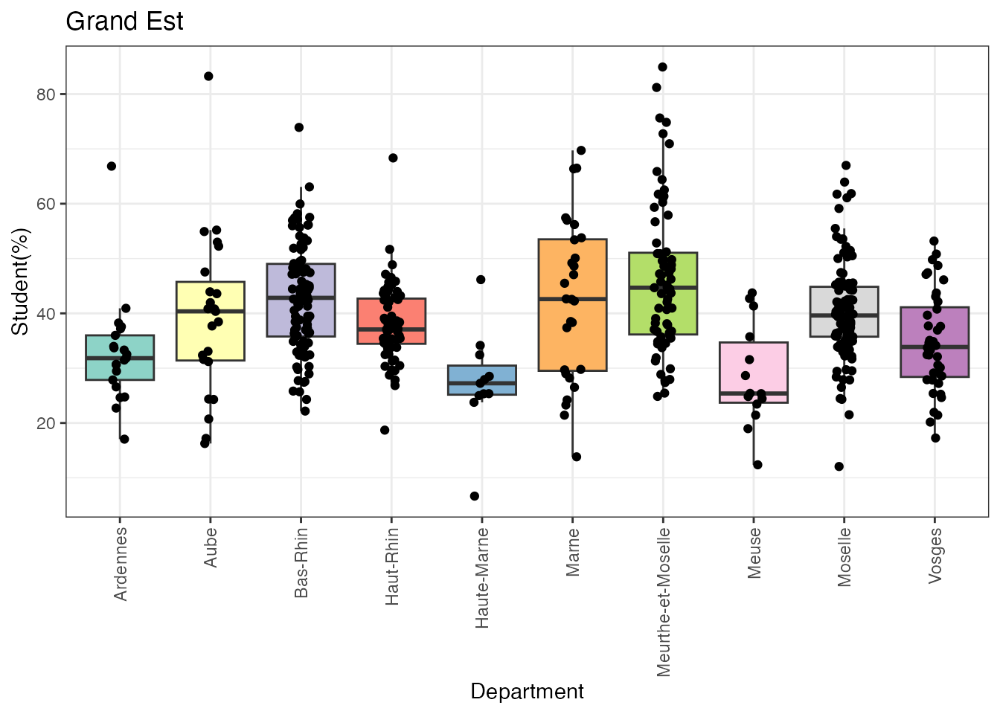
14.9 Violinplot
One last one, the violin plot, which shows us the distribution curve. We use the geom_violin() function for this.
ggplot(rp2018_reg28, aes(x = code_departement, y = etud, fill = code_departement)) +
geom_violin() +
geom_boxplot(width=0.1, color="grey", alpha=0.2) +
geom_jitter(width = 0.1, color = "black") +
labs(title = "Normandie", x = "Department", y = "Student(%)") +
theme_bw() +
theme(legend.position = "none")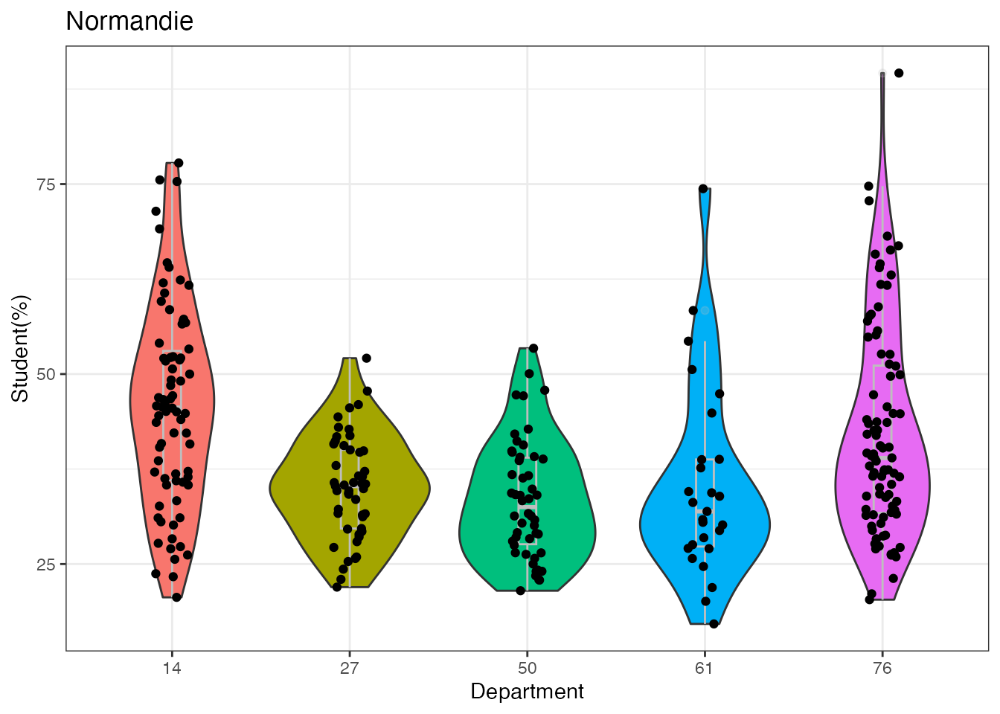
#choose your color with a vector of colors
ggplot(rp2018_reg28, aes(x = code_departement, y = etud, fill = code_departement)) +
geom_violin(bw = 2) +
geom_boxplot(width=0.1, color="grey", alpha=0.2) +
scale_fill_manual(values = c("black", "red", "yellow", "darkgreen", "pink"),
limits = c("14", "27", "50", "61", "76")) + # color
labs(title = "Normandie", x = "Department", y = "Student(%)") +
theme_bw() +
theme(legend.position = "none")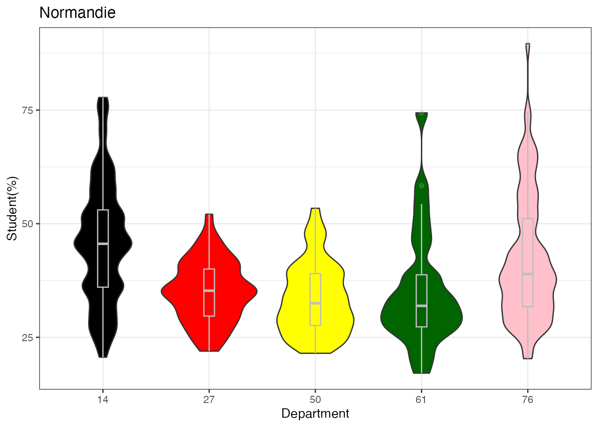
14.10 Scatterplot
We can also create a scatterplot (a graph with points) between higher diplomas and cadres for example. The geom_point() option allows us to display points (with continuous data, for instance).
The scale_color_gradient() here allows us to directly detect the numerical values of the variables and produce a continuous color palette for data visualization. This allows us to integrate another variable on the points of the graph, and we can also apply it to the size to compare the x-axis and y-axis of the data to find the effect of other variables. For example, we can see that the higher the proportion of students, the more apartment rentals we observe. The scale_color_gradientn()here allows to
ggplot(rp2018, aes(x = dipl_sup, y = cadres)) +
geom_point() +
theme_classic()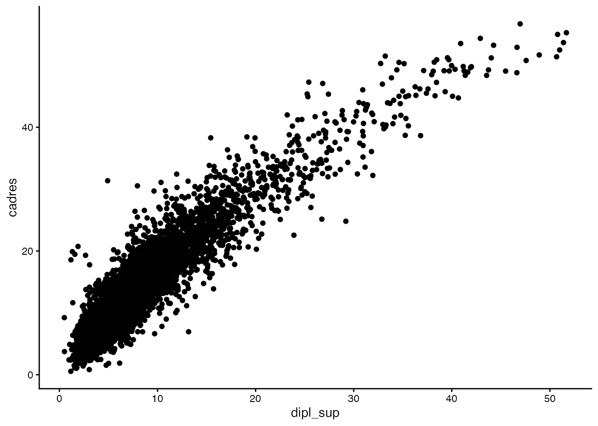
ggplot(rp2018, aes(x = dipl_sup, y = cadres, color = chom, size = pop_tot)) +
geom_point() +
scale_color_gradient("Unemployment (%)", low = "white", high = "blue") +
scale_size(range = c(0, 10)) +
theme_classic()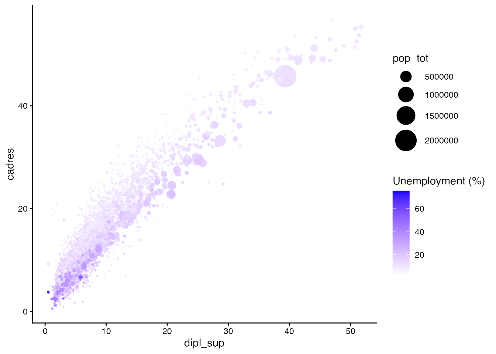
ggplot(rp2018, aes(x = dipl_sup, y = cadres, color = chom, size = pop_tot)) +
geom_point() +
scale_color_gradientn(name = "Unemployment (%)",
colors = c("white", "lightblue", "blue", "black"),
limits = c(min(rp2018$age_15_29), max(rp2018$age_15_29))) +
scale_size(range = c(0, 10)) +
theme_classic()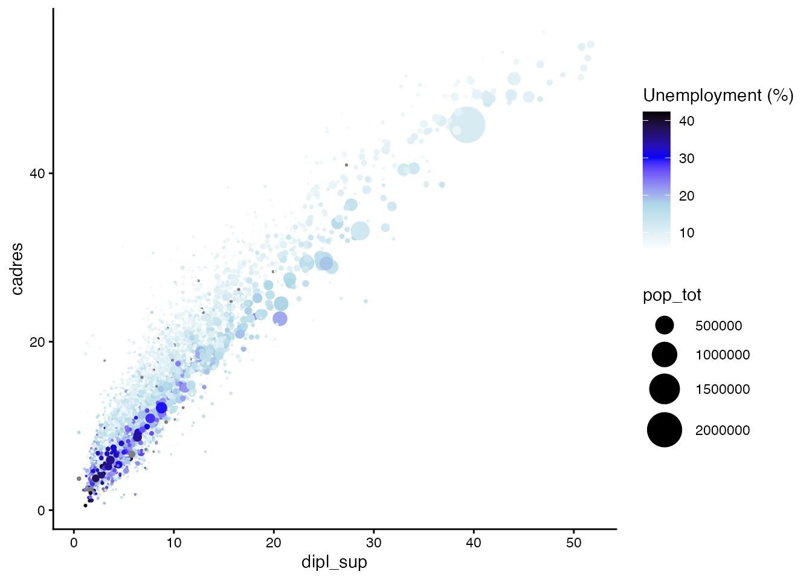
14.11 Scatterplot and regression line
We can also try to put the color of the points according to the variable (to color points, use color), and we add regression lines with the geom_smooth() for the higher diplomas and the cadres.
ggplot(rp2018, aes(x = dipl_sup, y = cadres, color = chom)) +
geom_point() +
geom_smooth(method = "lm", se = F) +
scale_color_gradientn(name = "Unemployment (%)",
colors = c("white", "lightblue", "blue", "black"),
limits = c(min(rp2018$age_15_29), max(rp2018$age_15_29))) +
theme_classic()
#> `geom_smooth()` using formula = 'y ~ x'
#> Warning: The following aesthetics were dropped during statistical transformation:
#> colour.
#> ℹ This can happen when ggplot fails to infer the correct grouping structure in
#> the data.
#> ℹ Did you forget to specify a `group` aesthetic or to convert a numerical
#> variable into a factor?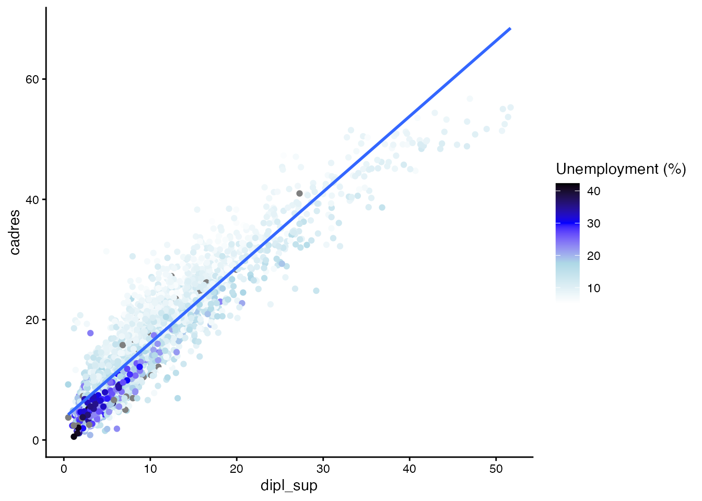
# for numerical variables, you can also you the color with the viridis package
ggplot(rp2018, aes(x = dipl_sup, y = cadres, color = chom)) +
geom_point() +
geom_smooth(method = "lm", se = F) +
scale_color_viridis(name = "Unemployment (%)") +
theme_classic()
#> Error in `scale_color_viridis()`:
#> ! could not find function "scale_color_viridis"14.12 Barplot
Here’s a quick example to understand the proportion of forest area in each canton of Luxembourg:
For instance, you can create a bar chart where the x-axis represents the cantons and the y-axis represents the proportion of forest area. Using a function like geom_bar() or geom_col() to create a barplot.
To specify that we want the height of the barplot to represent the value indicated in our data frame, we need to add stat = "identity in the geom_bar() function. Normally, geom_bar() counts the number of cases at each x position (as an histogram), but with stat = "identity", it uses the values in the data directly. The ‘width’ option allows you to adjust the width of the barplot.
Source : https://ggplot2.tidyverse.org/reference/geom_bar.html
forest_area <- read.csv2("C:/Users/leandre.fabri/Documents/R/MAGEO_06.41/data/statec/forest_area_canton.csv", sep = ",")
#> Warning in file(file, "rt"): cannot open file
#> 'C:/Users/leandre.fabri/Documents/R/MAGEO_06.41/data/statec/forest_area_canton.csv':
#> No such file or directory
#> Error in `file()`:
#> ! cannot open the connection
ggplot(forest_area, aes(x = GEO..Géographie, y = OBS_VALUE, fill = GEO..Géographie )) +
geom_bar(stat = "identity",
width = 0.5) + # width of the bar
theme_bw() +
labs(title = "Area of the afforestation rate", x = "Cantons", y = "Afforestation rate") +
scale_fill_manual(values = pal2(12)) +
theme(legend.position = "none",
axis.text.x = element_text(angle = 90, vjust = 0.5, hjust = 1))
#> Error:
#> ! object 'forest_area' not found
ggplot(forest_area, aes(x = GEO..Géographie, y = OBS_VALUE, fill = GEO..Géographie )) +
geom_bar(stat = "identity",
width = 0.5) + # width of the bar
theme_bw() +
labs(title = "Area of the afforestation rate", x = "Cantons", y = "Afforestation rate") +
scale_fill_manual(values = pal2(12)) +
theme(legend.position = "none") +
coord_flip() # allow to keep the real name of the canton
#> Error:
#> ! object 'forest_area' not found14.13 To help you
Data of the classes :
library(questionr) -> rp2018
Forest area by canton and commune -> lustat.statec.lu
14.14 Your turn!
Go take the data on land use proportions for some cities in the ouest of Europe :
land_use_EU_ouest.rdsCreate a few plots with a ‘ggplot2’ style.
The data comes from the urban atlas 2018 shows the proportion and the area of different classes of land use per city.
p_…. is the proportion in %
area_….. is the surface in m²
pop_tot of the city
perimeter_tot and area_tot of the city